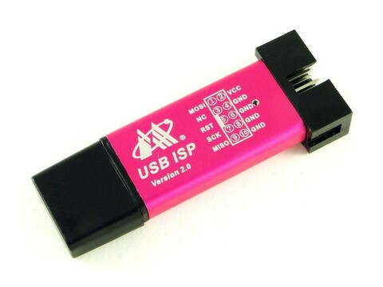

參考資訊：
https://www.microchip.com/en-us/product/attiny13#Documentation
https://nerdathome.blogspot.com/2008/04/avr-as-usage-tutorial.html
司徒目前使用的編譯器是AVR GNU Compiler，而燒錄軟體則是avrdude，安裝步驟如下：
$ sudo apt-get install gcc-avr avr-libc avrdude
使用的燒錄器則是AVR USB ISP(如果avrdude不支援，則需要先Patch)
